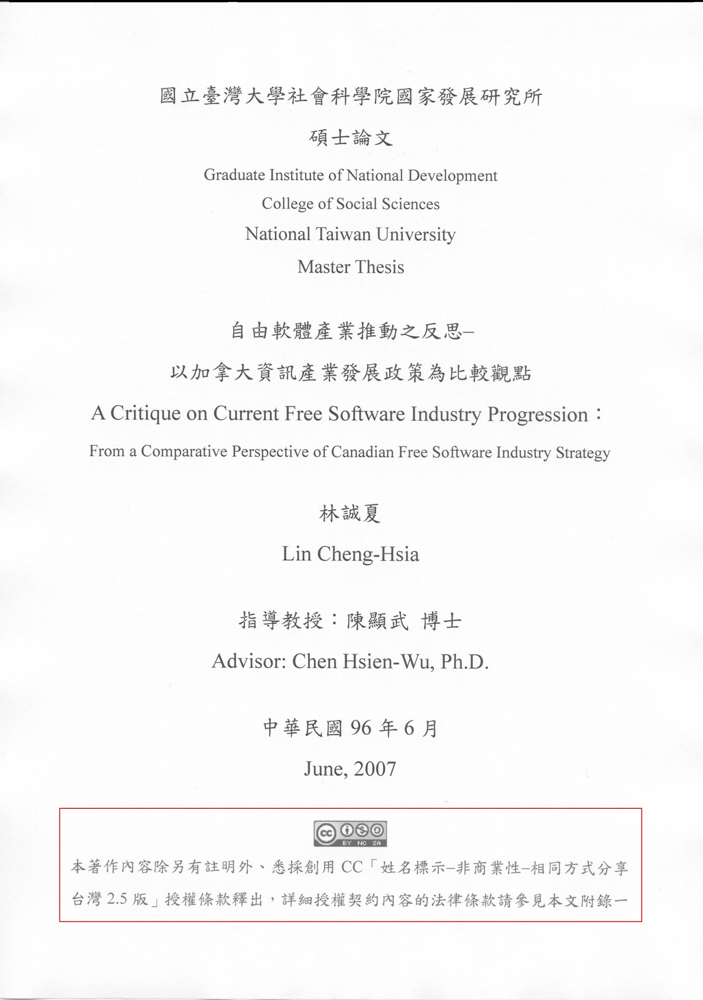
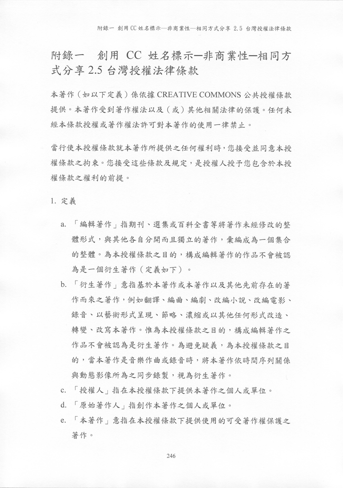
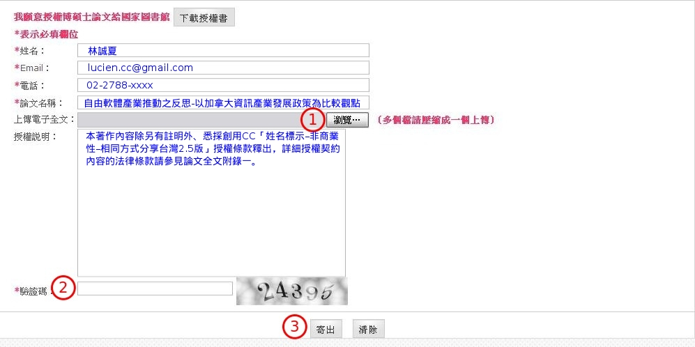
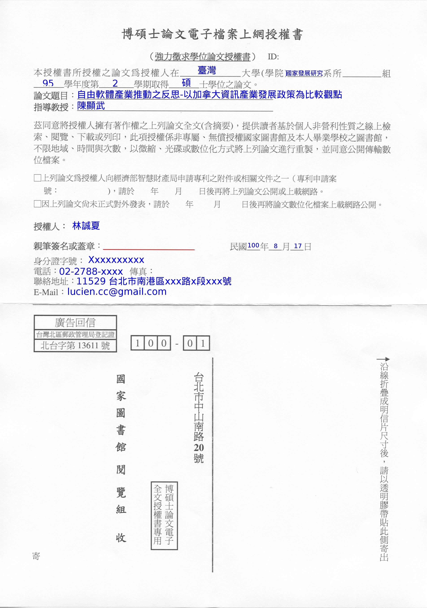
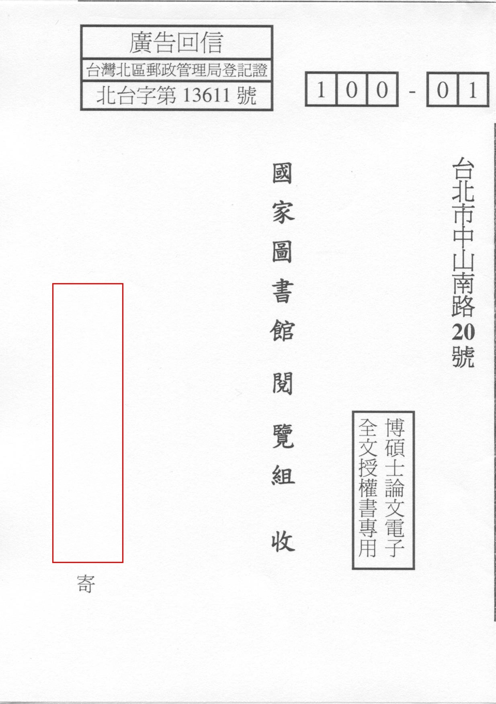
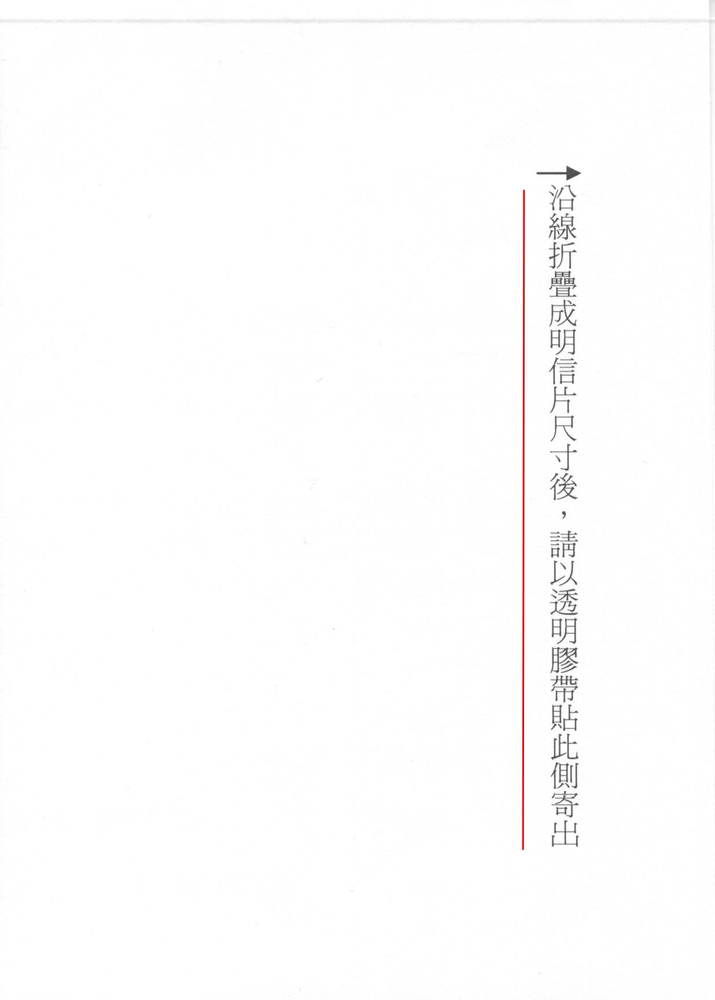

也紀念我們永遠的朋友 李士傑先生（Shih-Chieh Ilya Li）。
「臺灣博碩士論文知識加值系統」強力徵求論文全文的網路下載與公示授權！
依照學位授予法第 8 條的規定：「博、碩士論文應以文件、錄影帶、錄音帶、光碟或其他方式，於國立中央圖書館保存之。」所以國內的碩博士生在通過學位考試後，皆被要求依照學校的行政流程，提交論文至各校圖書館，再由各校圖書館轉寄一份論文全文給國家圖書館依法保存。如此一來，國內外各地的其他研究者，將有機會透過國家圖書館這個統一的中樞系統查詢到著作人的學術創作，為畢業的碩博士生在學術領域帶來更高的曝光率、被引用率、知名度與影響力。然而您知道嗎？若沒有得到著作人的額外同意，國家圖書館所能協助傳遞知識的方式，將有很大的比例被侷限在紙本借閱的傳統模式上，這是因為著作權法「權利人保留所有權利 (all rights reserved)」的預設模式，導致國家圖書館依現行法律只能就論文的摘要進行網頁曝光，而多數碩博士生在離校時所簽署的「電子檔全文授權書」，其授權對象也多限縮在校方而不及於國家圖書館。這樣的現狀，導致國內文學、科學各領域知識的傳遞速度緩慢，並且也沒有辦法善用近年網際網路急速發展的便利性，來增裨並培植國家整體的學術研究能量。
為了處理上述的問題，現在，國家圖書館已經有了嶄新的作法可以因應這樣的情況！其於 2010 年 11 月 5 日發布了一則標題為「臺灣博碩士論文知識加值系統徵求授權說明」的聲明（註一），透過這則聲明，國家圖書館建立了讓論文原著作人可以另行授權給國圖的補強機制，透過這個補強機制，已經畢業的碩博士朋友們，將可以透過親筆簽名後免自費郵遞授權書的方式，讓國家圖書館取得將您的論文全文放置於網站公示並供人下載的資格！如此一來，這些另行簽署授權書的論文便能透過公開近用 (open access) 的方式來擴大曝光管道，另一方面，也可以讓國家圖書館能夠協助資訊弱勢的族群，以更低傳輸成本的方式取閱到這些論文，以加速知識的散布效率與流通範圍。
然而，單單簽署這份授權書，也僅是授權國家圖書館能夠合法地協助您將論文全文放置於國圖網站上，一般民眾在下載這些論文之後，若沒有原著作人的額外授權，仍然不能再續行散布或是改作這些作品。所以，若是您希望將您的論文以更自由散布或容許修改的方式釋出，則建議可以在論文全文電子檔的封面，自行添註所欲選用的公眾授權條款標誌。至於該選擇哪一類別的公眾授權條款，可以參考台灣創用CC 計畫製作的「授權精靈 (https://creativecommons.tw/choose-license)」，透過這個授權精靈頁面的操作，您將可以挑選出符合授權偏好的 Creative Commons license 來散布您的論文著作，並且也可以為這些論文增設「禁止改作」、「非商業利用」，以及「散布後必須以相同方式分享」的額外授權條件；而或者您更認同自由軟體基金會 (Free Software Foundation, FSF) 所編撰的「革奴自由文件授權條款（GNU Free Document License, GFDL，註二）」，則亦可以為您的論文採用該授權。甚至，若是您有意直接拋棄該論文的相關著作權利，亦可為其選擇宣示著作已進入無著作財產權利保護狀態的「公眾領域（Public Domain，註三）」標誌，或是選用更積極主動宣示拋棄態度的「CC0-公眾領域貢獻宣告（註四）」！
再者，要提醒讀者的是，近年來推動的公眾授權機制多數是明文規定不可嗣後撤回的（irrevocable，註五），所以若是您將所撰寫的論文，依照創用CC 或是 GFDL 授權條款向外釋出，因為這是屬於「非專屬」的授權方式，未來您仍然可以選用其他的公眾授權或商業授權的方式，來再次散布這個作品。可是，原本依照 Creative Commons 或 GFDL 授權方式散布出去的版本，是沒有辦法被嗣後取消的，這點規定請權利人務必在事前充份知悉。而若是對於 Creative Commons license 或是 GFDL 與其他相關公眾授權的方式有所疑問，建議可以查閱台灣創用CC 計畫所編撰的常見問題集 (https://creativecommons.tw/faq)，或是透過 Email 向其詢問進階的問題 (https://creativecommons.tw/contact)，此外，若是與教育領域相關著作權法及創用CC 方面的疑問，亦可逕在教育部創用CC 資訊網的諮詢服務頁面提報您需要釐清的相關資訊 (https://isp.moe.edu.tw/ccedu/service.php)。
接著，在您為論文著作選定了理想的公眾授權模式之後，藉由國家圖書館重新設計過的授權補強機制，將您的論文另行授權給國圖來進行全文流通其實一點都不複雜，以下就透過步驟化的圖示與說明指南來協助大家完成這個動作：
一、取出您自行留存的博碩士論文全文的電子檔案，並依您的授權偏好在文件首頁為其添註適當的公眾授權條款資訊與標誌。
1、圖1 為依創用CC 「姓名標示-非商業性-相同方式分享台灣 2.5 版」釋出論文的範例，紅框的部份必須清楚寫出授權方式的相關資訊，並貼上該類型 Creative Commons 授權方式的標誌，建議此一標誌圖案並可設定超連結，連結網址為該授權方式的法律授權條款頁面，此例中的連結網址即為：https://creativecommons.org/licenses/by-nc-sa/2.5/tw/legalcode，而若您信任創用CC 授權的未來演變，亦可於條款特定版本號後加上「及其後版本」這五個字，例如此例中即為「姓名標示-非商業性-相同方式分享台灣 2.5 版及其後版本」，如此一來，若是 Creative Commons license 日後再有新版本的更新，其他人便可依新版條款的授權方式來利用並散布您本來以 2.5 版釋出的作品。但若是您所上傳國家圖書館的論文僅欲提供網路下載與網站全文瀏覽，並不打算允許下載者嗣後再行散布這份著作，則便不需要額外添註任何公眾授權條款的相關標示。

▲ 圖1 依創用CC 「姓名標示-非商業性-相同方式分享台灣 2.5 版」釋出論文首頁標示的範例
2、圖2 為將創用CC 「姓名標示-非商業性-相同方式分享台灣 2.5 版」法律條款全文添附於論文附錄之範例，其實，依創用CC 授權條款的預設，添附授權條款全文併與著作本身一同散布的步驟並非必然的義務性規定，必要時可以省略之；然而，若是您欲選用的條款，為自由軟體基金會所編寫的各類公眾授權條款，例如前文提到的 GFDL，則添附條款全文與著作本身一同釋出，便為一必須實踐的義務性規定。

▲ 圖2 將創用CC 「姓名標示-非商業性-相同方式分享台灣 2.5 版」法律條款全文添附於論文附錄之範例
二、至「臺灣博碩士論文知識加值系統」徵求授權的網頁 (https://ndltdcc.ncl.edu.tw/get_thesis_authorize.php) 上傳論文全文的電子檔案並填註相關資訊
1、依序填註圖3 中以 * 號表示之必填欄位資訊。
2、按壓 之「瀏覽」按鈕，並指向您電腦裡論文全文電子檔案之路徑。
3、填註簡單的授權說明以協助國家圖書館的工作人員，能以更快的速度辨識並分類您所上傳的論文內容。
4、於 輸入該網頁隨機產生的驗證碼。
5、確定相關資訊皆填註無誤後，按壓 的「寄出」按鈕，以完成檔案的上傳。

▲ 圖3 「臺灣博碩士論文知識加值系統」提供的論文上傳網頁與步驟說明
三、親筆簽署並郵遞回傳「博碩士論文電子檔案上網授權書」予國家圖書館
1、下圖4 所示之「博碩士論文電子檔案上網授權書」可於論文全文電子檔案上傳之同一網頁下載取得，在此授權書上依序填註各項論文的相關資訊，圖4 紅線所示之處，務必要由論文著作人親筆簽名或蓋章。

▲ 圖4 國家圖書館博碩士論文電子檔案上網授權書
2、將授權書依中分線對折再對折，即可將您所填註的個人相關資訊遮蔽住，在圖5 紅框處寫下寄信人的姓名與地址。

▲ 圖5 將授權書折疊為一般明信片大小以適合郵遞
3、最後，依圖6 紅線部份的提示文字「以透明膠帶將授權書側邊黏貼好」，不需額外再自費黏貼郵票，即可依一般郵務寄信方式將授權書郵遞回國家圖書館！
4、此時整個授權流程大功告成！國家圖書館已額外取得將您論文全文上傳與網頁公示方面的資格，此後您的學術著作將可以透過國家圖書館這個儲放全國知識的中樞查詢系統，為更多人所下載參考並標記引用，而若您一併於上傳的電子檔案裡，內嵌了所選用的公眾授權條款資訊與標誌，則下載者還可以依照您預設授權方式的指示，為您續行散布或加值改作這份學術歷程上的心血結晶！

▲ 圖6 以透明或是雙面膠帶黏貼授權書側邊後即可郵遞授權書回到國家圖書館
註一：「臺灣博碩士論文知識加值系統」徵求授權的說明網頁與論文全文電子檔案的上傳網址：https://ndltdcc.ncl.edu.tw/get_thesis_authorize.php。
註二：目前最新版本的 GFDL 為 1.3 的版本 (https://www.gnu.org/licenses/fdl.html)，使用者亦可依需求選用較舊的 1.2(https://www.gnu.org/licenses/old-licenses/fdl-1.2.html) 與 1.1(https://www.gnu.org/licenses/old-licenses/fdl-1.1.html) 版本。
註三：關於 Public Domain 的顯示標誌，可參考 Creative Commons 右列網頁的例示與說明文字：https://creativecommons.org/publicdomain/mark/1.0/deed.zh_TW，而關於「公眾領域」或是「公共領域」的命名探討，可參考莊庭瑞博士所撰專文《CC專題："The Public Domain" 怎麼說？》：https://creativecommons.tw/in-depth/539。
註四：CC0 表彰的是著作的原作者，在法律許可的範圍內，拋棄該著作依著作權法所享有之權利，並主動宣示將該著作貢獻至公眾領域。此為 Creative Commons 新推行的著作權利拋棄標誌，主要是因為就法學解釋上，傳統的「公眾領域」多指因時效屆至而不再為著作權法保護的作品，或是自始就不具有著作權保護適格的法令、規章等客體，所以為了杜絕疑義，Creative Commons 近年推行 CC0 這個新創的標誌，以讓願意拋棄著作權利的權利人，能以更積極主動的方式宣告其拋棄作品權利的態度。
註五：可參照「CC-BY-3.0-台灣」的法律條款第 7 條 b 款：授權人保留依不同授權條款釋出本著作或隨時停止散布本著作之權利，惟授權人的這類選擇，不得撤銷本授權條款（或任何其他依據本授權條款已授與或必須授與之授權），且本授權條款將會全部繼續有效，除非本授權條款依據上述規定而終止。此議題的延伸討論可參考敝人與葛冬梅合著專文，「自由軟體專案授權方式的轉換（上）：不得撤銷原授權條款」：https://www.openfoundry.org/tw/legal-column-list/8195-2010-11-22-18-38-45。
Special


Address：No.128, Sec.2, Academia Rd., Institute of Information Science, Academia Sinica, Nangang District, Taipei City 11529, Taiwan (R.O.C).
Privacy Policy. Terms-of-use

Comments
幾年前有寫信問過，不過沒下文。
See: blog.roodo.com/.../...
我現在若想要求國圖修正，是否需 要再寄送一次？
是的、可能要麻煩您重新簽署一次 授權書寄給國圖，並透過上傳頁面 將電子檔再次上傳。
就我的了解，國圖前幾年這樣額外 收納授權的政策還沒有穩定，但現 在已經是對外正式發布公告，所以 流程處理上應該已經都上軌道了！